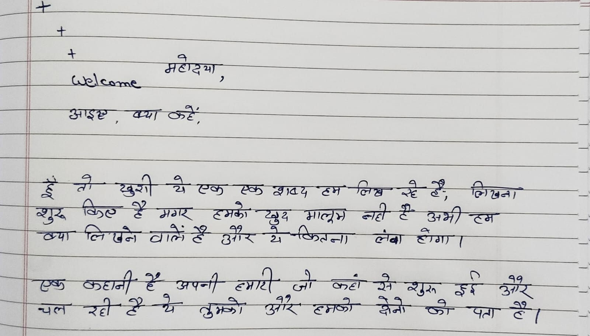
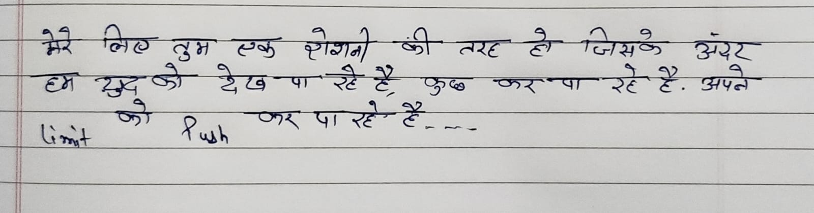

For Khushi ❤️
A small message from my heart


Dear Khushi, हूं, तो ख़ुशी ये एक एक शब्द हम लिख रहे हैं, लिखना शुरू किए हैं मगर हमको खुद मालूम नहीं है अभी हम क्या लिखने वाले हैं और ये कितना लंबा होगा। एक कहानी है अपनी हमारी जो कहां से शुरू हुई और चल रही है ये तुमको और हमको दोनों को पता है।
मगर ये आगे अब कैसे बढ़ेगी कैसे रास्तों से गुजरेगी ये हम दोनों ही तय करेंगे, तुम्हें मुझसे किसी भी बात से शिकायत हो तो ज़रूर से माफ़ करना, और माफ़ी का भाव हम कहीं नहीं रख पाते यूं ही तुमसे तुम्हारे पास रखते हैं क्योंकि तुम मेरे लिए काफ़ी valued aadmi हो, काफ़ी admirable हो, काफ़ी thoughtful हो, और सबसे जरूरी काफ़ी aware हो, तुम्हारी सबसे बड़ी खूबी मुझे ये लगती है कि तुम अपने लोगों के लिए कोई भी चीज़ करने के लिए हमेशा तैयार रहती हो, always, care ka भाव साफ़ झलकता है। हम उल्टा पुल्टा बात नहीं करने वाले हैं कुछ और न ही करना है। But main baat बतानी hai आपको wo ये है कि तुम काफी ज्यादा साहस लाती हो मेरे अंदर, काफ़ी ज्यादा energy लाती हो मेरे अंदर, हम ऐसे आदमी special क्या hota है कैसे होता है कुछ पता नहीं था जिसको आज तक, उसको special बनाती हो बताती हो,एक self confidence arise hota hai,

मेरे लिए तुम एक एक रौशनी की तरह हो जिसके अंदर हम खुद को देख पा रहे हैं, कुछ कर पा रहे हैं अपने limit को push करके, किसी के तरफ़ से कौन खड़ा होता है वो ज़रूरी है पर साथ कौन खड़ा होता है वो उससे भी ज्यादा जरूरी है, और तुम मेरे साथ बिल्कुल खड़ी रही हो। और सच कहें तो तुम्हारे साथ बात करना कभी आदत नहीं बना, बल्कि एक सुकून जैसा हो गया है और बात करना सिर्फ बात करना नहीं है, ये सब कुछ ये सब कुछ है, इतनी चीजें यही है।
तुम्हारा सपना ये नहीं है कि सिर्फ़ तुम्हारा है, I genuinely feel कि boundaries तोड़ के कोशिश करे और पहुंच जाए मंजिल पे, तुमको मालूम है, हम atheist नहीं है, भगवान में बहुत विश्वास है, मगर सवाल फालतू का क्यूरोसिटी के मारे आदमी करते गए और हमको एक समय एक सिंगल वज़ह नहीं मिला कि हम bonded हो पाए, पूजा मंदिर.., काफ़ी डांट bhi सुने सबसे घर में, लेकिन हमको uneasy ness hota रहा, hamko यकीन hi nhi aa pa रहा था, लेकिन तुम changes लाई हम तुम्हारा बात काट ही नहीं सकते, तो चेंजेज ये कि रियलाइजेशन भगवान के प्रति तेज हो गया मेरा, ये नहीं कि हम पंडित ही बन गए
मगर क्या चेंज वो मालूम है, और ये हम जो बता रहे हैं वो उन 100 और 1000 बेहतरी में से एक उदाहरण है, की तुम complete करती हो,,
तुम काफ़ी special हो मेरे लिए, मेरे life me aane ke liye, tumhra jitna शुक्रिया करूं वो कम है, बहुत कम है, हम कभी कर ही नहीं सकते उतना।
सच बताए तो हम romentisize कभी कभी चीजों को करना चाहते हैं कहना चाहते हैं, रोमेंटिसाइज समझी n, हां हां वही जो सोची अभी तुम, not alwaysaur sbse zaruri ki तुम boundaries guide जो जानती हो रखती हो, काफ़ी ज्यादा हमको प्यारा लगता है, और एक हंसी भी तुम्हारी romantisize हो जाती है। नॉर्मल बातों में रस आ जाता है, तुम आ जाती हो।
मेरे सच को सच बनाने के लिए, हां ये हक़ीक़त है कि हम जो कह रहे हैं वो अभी तुम पढ़ रही हो ये सपने को सच बनाने के लिए, Mahadev 🤞, ka bahut आभार hai yr,
Aur ham tumse ek baat kehte hain, हम ज़रूर से तुमको रोज़ 1% better ke तरफ़ hi le jaye bheje yahi kohsish karenge, ki growth करो, tum kuch behtar se बेहतर करो, सच बताए तो हम जब कुछ अच्छा करते हैं और उसमें तुम या कोई आदमी कुछ कहता है, तो अच्छा लगता है, हमको
मगर मेरी बातों से ज्यादा, जब तुम कुछ अच्छा करती हो, हम कुछ अच्छा देखते हैं, सच बता रहे, हमारी खुशी दस गुनी हो जाती है, दस गुनी तुमसे ज्यादा खुश हम होते हैं तब, पता नहीं kahe पर तुम कुछ बेहतर बताती हो, तो बहुत बहुत ज्यादा ही अच्छा लगता है, ऐसा लगता है, की वो मेरा अचीवमेंट हो। तुम खुशी हो और सच में मेरी खुशी बन गई हो।
और एक बात और है, जो शायद हम कम बोल पाते हैं, मगर महसूस बहुत करते हैं। तुम्हारा होना मेरे लिए किसी competition या comparison की बात नहीं है, बल्कि एक भरोसे की बात है। ऐसा भरोसा कि दुनिया में कोई है जो अपने रास्ते पर सच्चाई से चलना चाहता है और हमें भी उसी तरफ़ push करता रहता है। और सच बताएं तो कई बार हम खुद से ज़्यादा तुम्हारे लिए अच्छा होने की कोशिश करते हैं।
आपके हर दिन के लिए हर रात के लिए, हम ये wish करते हैं कि कमाल हो जाए, एकदम चार चांद लग जाए, और एक secret बात मालूम है, जो कहती हो n,
Ek baat pta hai tmko, काफ़ी प्यारा लगता है, इतने अच्छे क्यों लगते हो, ये कहते हैं n मतलब पूछते हैं n,
Hamko मालूम है क्यों लगते हो तुम, मगर उस चीज को बताने के लिए शब्द बना ही नहीं है, जो बता पाए।
और सच बताएं तो तुम्हारी एक ये बात हमें बहुत पसंद है — तुम अपनी बात और अपने रास्ते पर साफ़ खड़ी रहती हो। हर चीज़ में सबको खुश करने के लिए खुद को बदलने वाली नहीं हो। शायद इसी वजह से तुम्हारे साथ बात करते हुए हमेशा एक सच्चाई महसूस होती है।
I miss you a lot!! Everytime, I wish for you !! everytime,
एक और बात है, शायद ये जरूरी है बोलना। हम तुम्हें किसी भी तरह रोकना नहीं चाहते, बल्कि सच में चाहते हैं कि तुम जितना आगे जा सकती हो उतना आगे जाओ। तुम्हारे सपनों की जो भी दिशा हो — पढ़ाई हो, मेहनत हो, या वो मंज़िल जो तुमने अपने लिए सोची है — हम चाहते हैं कि तुम वहाँ तक पहुँचो। और अगर कभी रास्ता थोड़ा मुश्किल लगे, तो याद रखना कि तुम्हारे साथ खड़ा एक आदमी ऐसा भी है जिसे तुम्हारी कोशिशों पर बहुत भरोसा है। Bahut Bharosa hai, tumhare himmat pe tumhare koshish pe,
और शायद यही सबसे सच्ची बात है जो हम कहना चाहते हैं। जिंदगी में रास्ते कैसे बदलते हैं, कहाँ से गुजरते हैं, ये हम दोनों को अभी नहीं पता। मगर इतना जरूर पता है कि तुम्हारा होना मेरे लिए बहुत मायने रखता है। तुम्हारा अच्छा होना, तुम्हारा आगे बढ़ना, और तुम्हारा खुश रहना — ये तीनों चीज़ें हमारे लिए सच में important हैं।
और बस, यही चाहते हैं कि जहाँ भी रहो, जैसे भी रहो, तुम्हारे दिन अच्छे हों, तुम्हारी मेहनत रंग लाए, और तुम्हारे चेहरे की वही हंसी बनी रहे जो इतनी आसानी से सब कुछ हल्का कर देती है, आसान कर देती है खुश कर देती है।